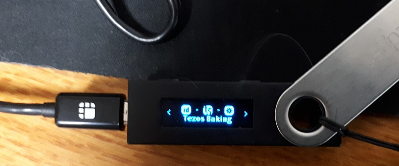
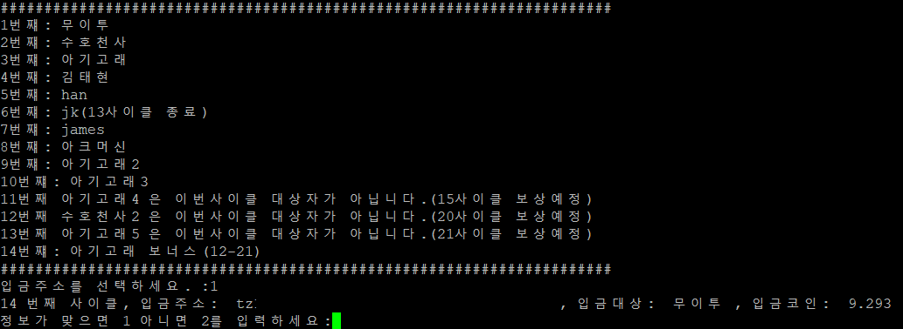

야웅베이커리 규칙
자신의 지분이 베이킹 롤에 포함되어 있을 경우, 보상 대상입니다. (롤 포함: 선착순)
위임 사이클 7사이클 이후 베이킹이 시작되며, 베이킹 후 6사이클 이후에 보상이 지급됩니다.
예) 2사이클 위임 시, 9사이클 베이킹, 15사이클 보상수령
베이킹 사이클 전 위임을 해지하더라도, 자신의 보유량이 스냅샷에 찍혔다면 보상
단, 다음의 경우는 보상을 지급하지 않습니다.
1. 롤에 지분이 포함되어 있는 상태에서 적어도 3일 전에 베이커에게 철회 의사를 표명하지 않고 철회하여 롤이 깨지는 경우
철회시점 이후의 보상(대기보상 포함)을 지급하지 않으며, 추가위임자가 깨진 롤을 채우는 경우, 이탈 위임자 몫의 50%를 추가 지급합니다.
2. 천재지변(전쟁, 지진 등)으로 인해 베이킹이 불가능 할 경우 보상을 지급하지 않습니다.
야웅베이커리 베이킹 환경
1. 나노레저(Nano Ledger S) 베이킹/지갑 앱 사용(2개 pair 설정)

2. 8GB 120GB SSD 저전력 PC로 24시간 365일 가동(백업 시스템 구비)
3. 기술력 있는 베이커(IT분야 종사자)
4. 베이커가 자체 제작한 스크립트와 나노레저로 정확/신속한 보상지급 보장

베이킹 보상 절차
1. 베이킹 보상수령(베이킹 사이클+6사이클) 익일 보상이 지급됩니다.
수수료는 5.5%로 수수료를 제외한 보상을 위임자의 tz주소로 전송합니다.
2. 백업 시스템(노트북) 노드 가동 후 나노레저 지갑을 연결합니다.
3. 자체제작 스크립트를 이용하여 보상을 tz주소로 전송합니다.
위임주소 : tz1Zbbuc5Z1ctnCVybqdw7z6FwPjgVufDATc [Copy]
{% endblock %}